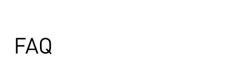
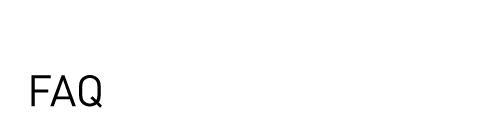

Neither Creative Commons nor Science Commons provide legal advice. Please see our disclaimer for more information.
An addendum is a document used to change the terms of a form agreement. Each of the Science Commons Author's Addenda is a form you can use to change the terms of a publisher's standard publication agreement to ensure that you, the author, retain certain freedoms to use your article and to post it online.
Not at all. Any author of a scholarly article can use one of these addenda to alter the terms of her publishing agreement.
Science Commons gives you some options for which rights you seek to retain. Each Addendum enables you to retain the freedom to use your article in your professional activities, such as teaching, conference presentations, lectures, and in other scholarly works.
The Addenda differ with respect to what you can post on the publicly-accessible Internet and the terms under which you post it.
OpenAccess-CreativeCommons gives you sufficient rights to post a copy of the published version of your article (usually in pdf form) online immediately to a site that does not charge for access to the article. Primarily, this would mean posting to sites such as a university digital library or a disciplinary repository, such as the National Library of Medicine's PubMed Central server, or, of course, to your own web site.
Under OpenAccess-CreativeCommons, you also retain sufficient rights to grant to the reading public a Creative Commons Attribution Non Commercial license. A Creative Commons license specifies uses that the author permits the reader to make with the article. Under this option, you can grant to the public the right to re-use or re-post your article so long as you are given credit as the author and so long as the reader's use is non-commercial. (For those familiar with the SPARC Author's Addendum, this option provides for retention of the same rights.)
OpenAccess-Publish gives you sufficient rights to post a copy of the published version of your article (usually in pdf form) online immediately to a site that does not charge for access to the article. (This is essentially the same provision as is in the MIT Copyright Amendment.)
OpenAccess-Delay treats the final version of your manuscript and the published version of your article differently. Under this option, you have the right immediately to post your final version of the article, as edited after peer review, to a site that does not charge for access to the article. With respect to the published version of your article, you can post it to a site that does not charge for access, but you must arrange not to make the article available to the public until six months after the date of publication.
Yes. In fact, if you are a university-based researcher, the Addenda make clear that you can comply with your grant agreement or cooperative agreement.
In grants and cooperative agreements with universities, the federal government receives a copyright license to publish, reproduce, or otherwise use copyrighted works, such as journal articles, prepared with federal funds. You give this license to the government automatically upon completion of your article. However, many journal publishers' copyright transfer agreements demand that you transfer all rights under copyright in the article, without acknowledging the fact that you have already given a license to the federal government. This Addendum requires the publisher to acknowledge the existence of any license already granted by you to your employer or to a funding agency, such as NIH.
Just follow these easy steps:
Science Commons is developing a web-based interface to the Author Addenda that is scheduled for release in the fall of 2006.
It depends. Anecdotal evidence from a variety of sources reveals that many scholarly authors have had success over the years in altering the terms of a publication agreement. Sometimes this has been done by marking up the publisher's agreement; other times the change has been done through use of an addendum. However, we are not aware of any statistical data concerning the success rate.
We are aware of no instance in which a publisher has refused to publish an article where the author sought to retain some non-exclusive rights to the article.
Please send an email to Science Commons with the name of the journal, the Addendum you attached, and the reasons for rejection. We are collecting empirical evidence on the use of such Addenda for our ongoing work in this area.
If the publisher refuses to publish your article under the terms of the Addendum, you have some choices to make. Under copyright law, you, the author, have the exclusive rights to reproduce, distribute, display, perform, and make derivative works from your article. The publisher needs a signed agreement from you for the publisher to obtain any or all of these exclusive rights. If the publisher does not sign the Addendum but publishes the article anyway, the Addendum specifies that such publication is an acceptance of the terms of the Addendum.
If the publisher refuses to sign the Addendum and refuses to publish the article unless you sign the publisher's agreement without the Addendum, you have to make a decision about whether this is the right publisher for you.
By sending the Addendum you have communicated to the publisher that you care about managing your copyright and think that one of the Science Commons Author's Addenda reflects a fair balance between your interests and the publisher's. If the publisher disagrees, find out which terms of the Addendum the publisher objects to most. Some publishers may be willing to agree to some modifications to their standard agreements.
If the publisher's position is take-it-or-leave-it with respect to the publisher's standard agreement, consider what alternative publications would be willing to enter into a fair copyright agreement for your article. Speak with your colleagues, your department chair, and/or your Dean about the choice you face. Consider what the standing of your article would be if you accept an offer from an Open Access journal. If you choose to publish elsewhere, make sure that you keep copies of your correspondence with a journal that refused to accept the Addendum for purposes of subsequent personnel evaluation.

Except where otherwise noted, this site is
licensed under a Creative Commons License